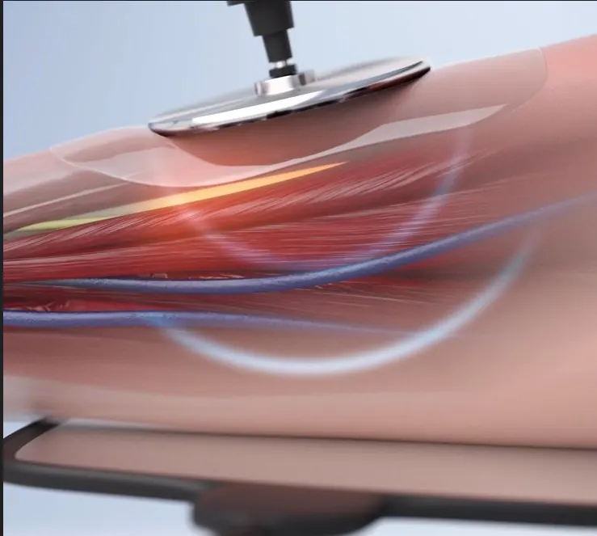
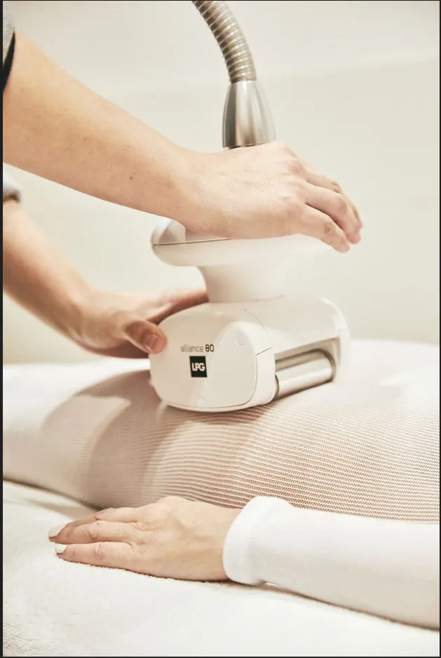
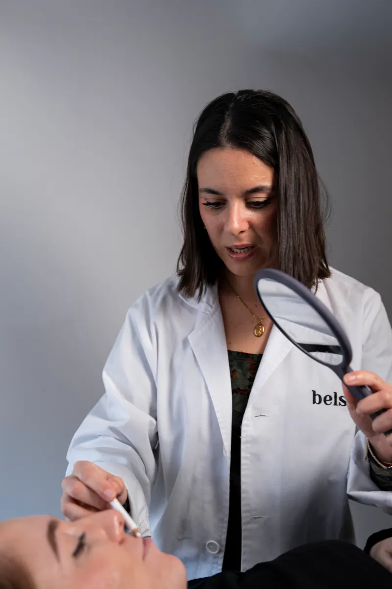
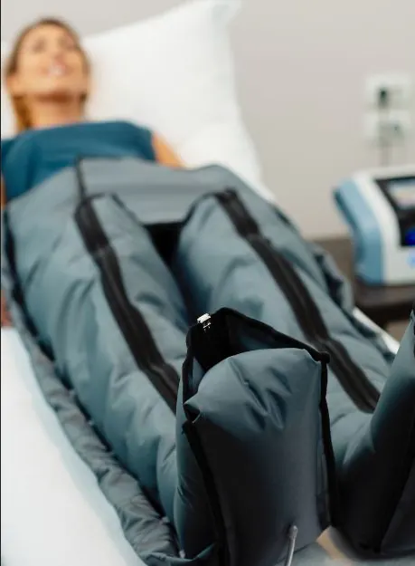
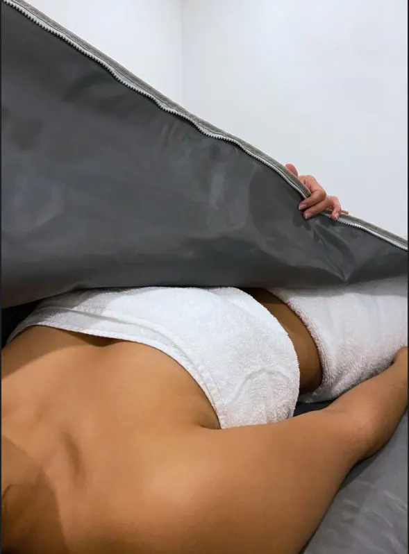

- Inicio
- BELSA Journal
Saber antesde decidir
Artículos claros, revisados por el equipo profesional, y los tratamientos complementarios explicados.
- Temas
- Medicina · Facial · Corporal · Tecnologías · Complementos
- Revisión
- Equipo profesional de BELSA
- Artículos
- 7

INDIBA o radiofrecuencia convencional: qué cambia y cuándo se indica
Qué significa trabajar a 448 kHz, para qué tipo de piel se valora y qué preguntar en consulta.
Leer artículo
LPG Endermologie: qué esperar de las primeras sesiones
Cómo es una sesión, qué notarás y cómo se mide la evolución.
Leer artículo
Recuperar la luminosidad de la piel después del verano
Rutina en casa y tratamientos en cabina, explicados paso a paso.
Leer artículo
Voluminización de labios: cómo buscar un resultado natural
Proporción, expectativas y preguntas clave antes de tratarte.
Leer artículo
Fototerapia LED: cuándo complementa un tratamiento facial
Qué es la luz LED, cómo la usamos en cabina y qué no debes esperar de ella.
Leer artículo
Presoterapia: cuándo complementa un plan corporal
Piernas ligeras y apoyo al drenaje dentro de un plan con LPG o radiofrecuencia.
Leer artículo
Manta y cinturón térmicos: el calor como complemento corporal
Qué aporta la termoterapia en cabina y cómo la combinamos.
Leer artículo¿Tienes una pregunta?